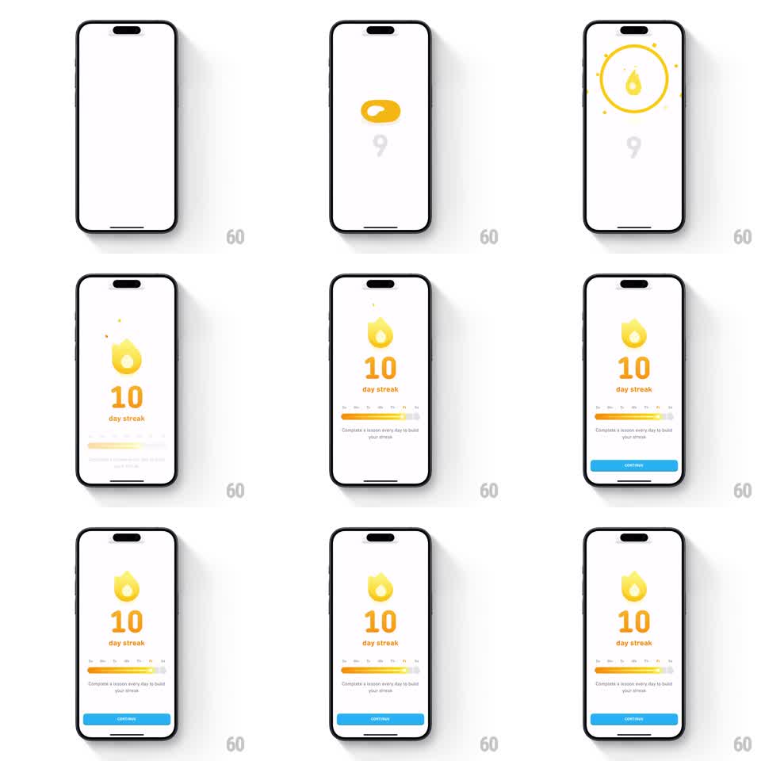

Media
Frame-by-frame

Rebuild this animation 1:1: Duolingo's 10-day streak celebration - on a white screen, a flat orange capsule morphs into the lit streak flame behind a burst ring, the counter rolls 9 to 10, the weekday progress bar fills, and a blue CONTINUE button slides up.

Rebuild this animation 1:1: Duolingo's 10-day streak celebration - on a white screen, a flat orange capsule morphs into the lit streak flame behind a burst ring, the counter rolls 9 to 10, the weekday progress bar fills, and a blue CONTINUE button slides up. ## Integration Integration: stack-agnostic spec - springs given as stiffness/damping, timed motions as duration + curve; map every value to your framework and animation library of choice. ## Scene White screen. Center: streak flame above a large counter and "day streak" label. Below: a weekday progress bar (day labels Su-Sa, yellow-orange fill), the caption "Complete a lesson every day to build your streak", and a blue CONTINUE button. ## Motion spec Pattern: milestone counter reveal with morphing flame. - A flat orange capsule sits where the flame will be; it stretches upward and morphs into the flame silhouette (300ms, ease-in-out) while a thin burst ring expands behind it (scale 0.5 -> 1.5, 350ms, fade out) with 4 spark dots. - Counter: rolls 9 -> 10 with a vertical digit slide (250ms) and scale pulse (1.0 -> 1.2 -> 1.0, 300ms). - Flame does a small hop (translateY -10pt, spring ~340/18). - Progress bar: track fades in (150ms), fill sweeps to the 10-day mark (600ms, ease-out), passing day labels that brighten as the fill crosses them. - Caption fades up (200ms); CONTINUE slides up from below (280ms, ease-out) last. ## Calibration - Morph, ring, and counter roll land together in the first half second; the rest staggers after. - White background throughout - no color wash for this milestone. ## Reduced motion Flame crossfades in, counter sets to 10, bar fills over 300ms, button fades in. ## Don't miss - The capsule-to-flame morph is the signature - do not start from a finished flame. - Day labels sit under the track and brighten only as the fill passes them.